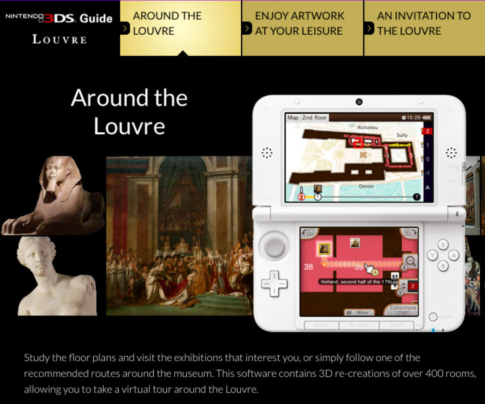
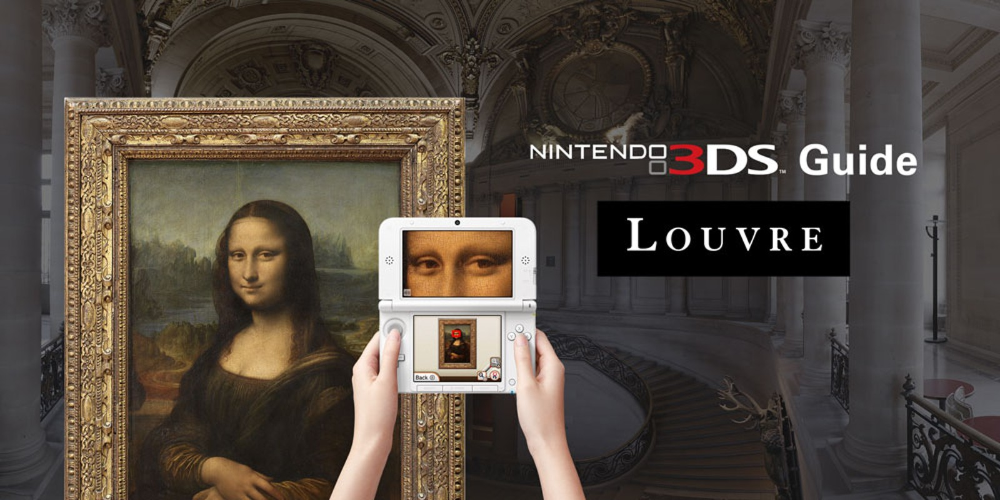
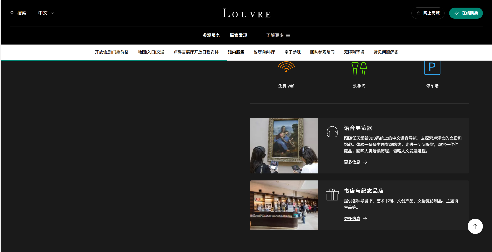
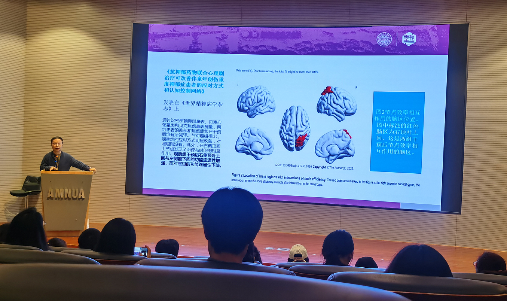
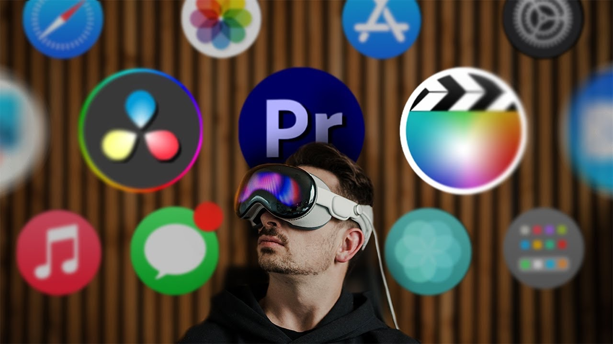
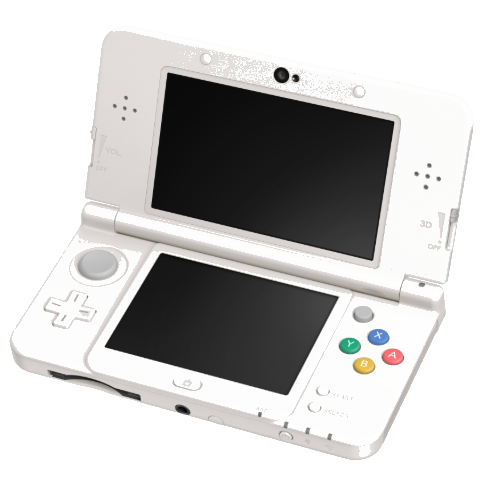
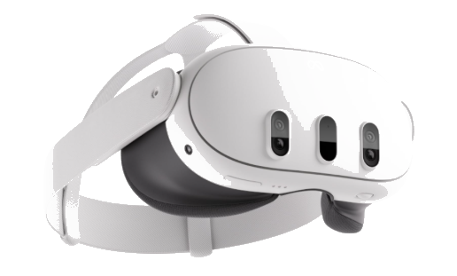

卢浮宫的
语音导览器
每年数百万人，通过它了解艺术。
这是游客与艺术之间的第一座桥。
向下滚动，看看这座桥的另一种可能
当这座桥变成
一台任天堂 3DS
事情变得不太一样。
游戏机，成为了艺术导览的新媒介。


《3DS导游卢浮宫》
游戏软件内部收录了庞大的艺术品资料，同时提供参观线路安排、语音导览、以及艺术品的 3D 效果全方位展示。该游戏在 2012 年投入卢浮宫使用。
3DS 游戏机特有的裸眼 3D 体验，让这场艺术之旅变得更加独一无二。
电子游戏设备成为了增强传统艺术的媒介，并且创造了独一无二的体验。
这种独一无二，只凭语言的描述，无法传达。


"把电子游戏机作为一种媒介来进行艺术创作"
存在以这种思路进行设计的可能。

裸眼3D
XR体验通信技术的发展促进了移动性和实时性等关键属性的提升，极大增强了人们维护远距离关系的能力，但与此同时，线下社交活动的减少也逐渐成为一种普遍现象。在生活习惯高度数字化的年轻群体中，以移动互联网为基础的媒介化社交使“持续在线”成为常态，却也带来了沟通碎片化和共同情景缺失的问题，使面对面互动逐渐退化为非必要选项，进而引发社交疏离与孤独感，作为数字原住民的大学生群体正处于这一变化的核心位置。
大学生群体存在明显的线下社交启动门槛。项目聚焦的不是抽象社交命题，而是现实社交中真实存在的启动压力、评价焦虑与联结浅层化问题。
项目以具身认知为核心支撑，将社交理解为身体、环境与任务共同参与的过程，而不只是语言交换本身。
Within 将 XR 重新定义为"社交引导媒介"，通过叙事空间、角色差异与信息分配，把用户从任务协作逐步引向现实中的自然交流。
本文以当代大学生群体线下社交失衡的现实问题为出发点，以促进现实社交行为的发生作为主要目标，探讨 XR 技术如何在设计层面被转化为一种社交引导媒介。研究结合具身认知与体验设计相关理论，以互动作品的设计实践为主要载体，探索以技术为媒介、以内容为核心的社交促进数字化设计方案。重点关注 XR 技术在公共空间中的应用情境，探讨其在降低社交启动门槛、引导沟通行为以及增强共同参与感方面的具体作用。
通过私密尺度、渐进式任务和低暴露度互动，把"主动社交"转化为"在情境中自然发生的协作"。
通过即时视觉反馈、多感官线索和环境联动，让用户在行动中获得明确的身体在场感与情境理解。
采用 Low-Poly 与超现实倾向的风格化空间，使视觉表达与情绪引导、社交节奏和叙事推进形成统一结构。
基于上述背景，本研究在具身认知理论视角下，以互动作品“Within”为实践对象，引入“跨媒介协作”为核心的社交激励方式，对大学生社交数字化设计展开探索。相较于传统 XR 体验将主要内容局限于头显中的路径，本研究尝试将其作为社交互动过程中的引导媒介，成为社交互动中的关键环节，并将 XR 虚拟场景、同步显示界面、实体线索及线下空间互动进行设计组织，使不同媒介在体验中承担互补功能。
Within 通过 XR 虚拟场景、同步显示界面、实体线索与现实互动的协同组织，把不同媒介整合为一套彼此支撑、共同服务社交引导目标的体验体系。
在实践层面上，本研究基于“跨媒介协作”机制展开设计策略，以大学生的社交场景为切入点，围绕数字化设计在现实人际互动中的应用展开实践探索。研究通过 XR 设备、同步显示界面与纸质媒介的组合，构建以任务为核心的互动情境，并在此基础上设计了包含角色分工与信息分配的协作机制。在这一过程中，交流不再依赖个体主动发起，而是在完成任务的过程中逐步产生，从而使互动由“刻意交流”转向情境中的“自然协作”。
具身认知理论
头显沉浸终端，承载空间探索与具身交互。
互动实体终端，承担线索分发与信息支援。
让虚拟场景、实体线索与现实交流围绕同一任务连续运作，形成完整的社交引导结构。
非对称角色分工与信息差异化沟通
协作沟通、共享信息、完成挑战
突破 XR 孤立终端框架，让技术转变为社交引导媒介。
把虚拟具身体验转化为现实社交互动的自然契机。
本研究以具身认知理论为核心理论视角，以互动作品“Within”为实践载体，围绕大学生社交情境中的诸多问题与痛点，提出“跨媒介协作”这一设计机制。本研究通过文献研究、问卷调查、案例分析与实践创作法，系统梳理了具身认知、跨媒介设计与大学生社交引导的相关研究成果，明确了当前数字化设计在大学生社交互动引导中的不足。在此基础上，构建了具身认知视角下社交数字化设计的核心原则、设计方法与设计步骤全流程。